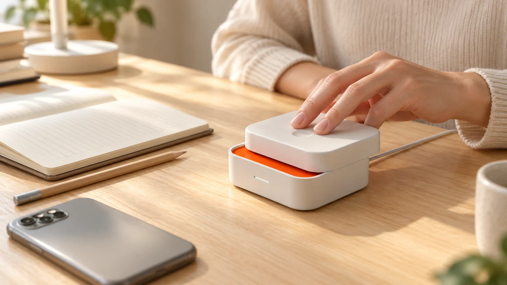
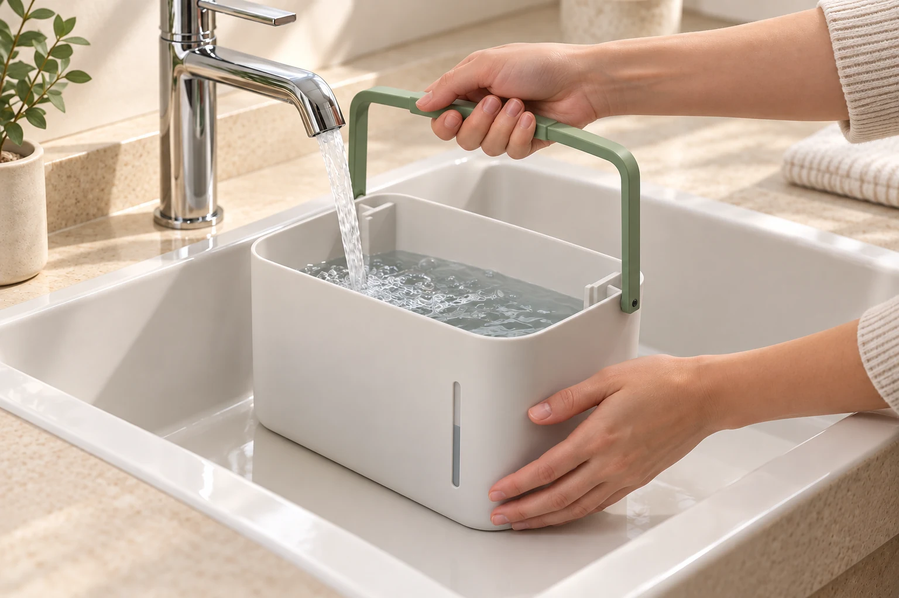
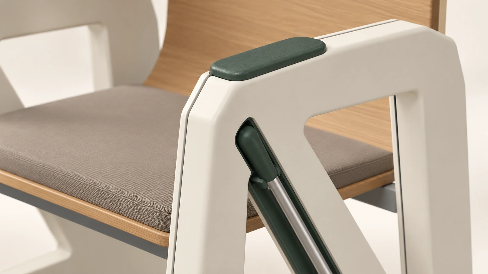

01 / 开始
给意图一个动作。
用一次滑动露出提示，让“开始”从想法变成可以看见、可以确认的状态。
设计，始于对日常的认真观察。
01—03三个项目，三个具体的问题。
从使用出发，回到细节。
展示全部 3 件作品
我关注人与产品相遇的那些细小瞬间。
从使用动作进入设计，再推敲它与形态、部件、操作顺序的关系。
让外观有来由，让细节有回应。

用一次滑动露出提示，让“开始”从想法变成可以看见、可以确认的状态。

从加水、拆洗到湿件停放，用取放顺序组织部件关系，而不只关注运行时的外观。

掌撑的位置、工具的路径与接触的材质，共同参与决定侧翼的形态和细节。
阅读完整项目，了解设计推导、
结构展开与后续计划。
日常很小，值得多想。